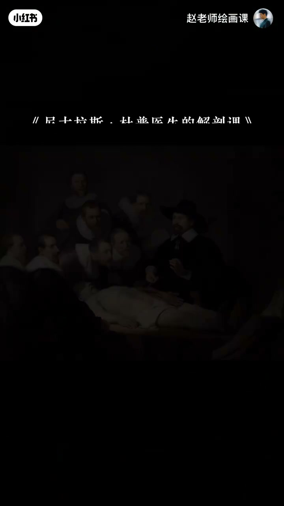
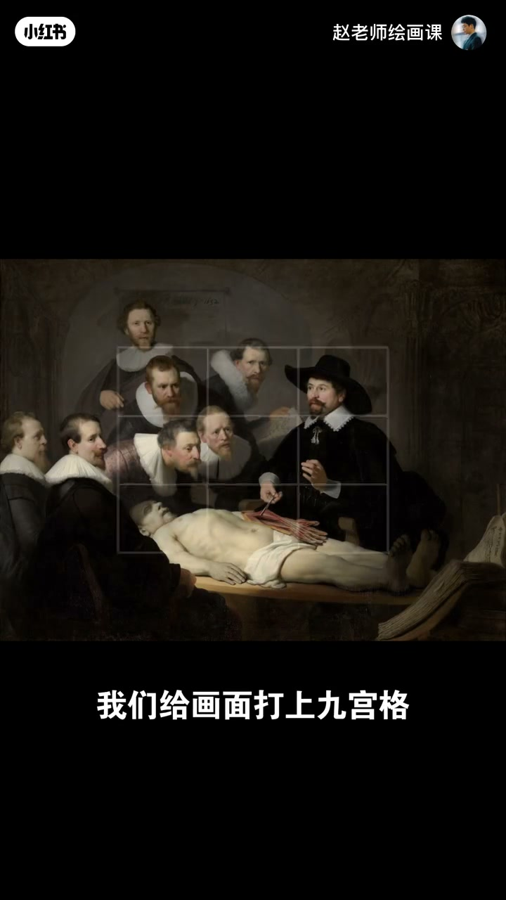
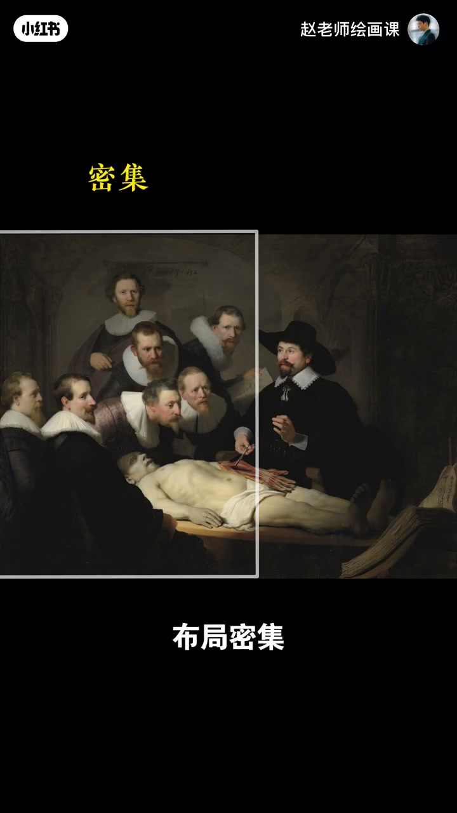
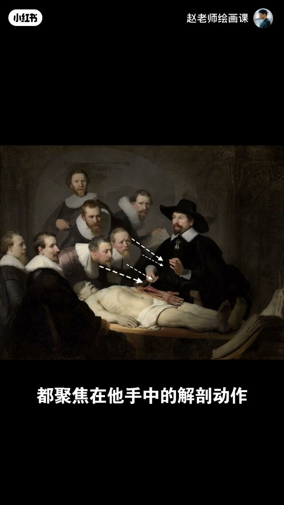

内容要点
人群中想突出「时尚奶奶」：放正中略呆板；靠前用近大远小则后排易被忽略。四百年前伦勃朗《杜普医生的解剖学课》给出更自然的解法——医生既不在正中也不靠前，第一眼却被吸引。四招：①九宫格黄金分割点安置C位；②左密右疏的疏密布局；③自信姿态＋隐藏稳定三角；④众人目光聚焦解剖动作，看不见的引导线把视线拉回主角。C位因此突出且生动有故事感。
知识结构
中心呆板；近大远小丢后排；解剖课引入。
黄金分割点；左密右疏如战场与将军。
姿态＋三角；视线引导；四招总结。
突出主角别只靠「放中间／放大」：分割点、疏密、姿态形与视线引导叠用，C位才自然生动。
00:00-00:54常规两招不够用
中心式构图有点呆板无聊；近大远小让后面的人容易被忽略。跟着看伦勃朗如何解题：《杜普医生的解剖学课》里示范的医生是主角，却既不在正中央，站位也不靠前，我们第一眼仍会被吸引。
00:40 全景引入是后续分析底板。

00:54-02:04黄金分割点＋疏密布局
打上九宫格：四个焦点称黄金分割点，由长宽按1:1.618分割形成，能自然引导视线并形成舒适比例；把C位安排在这儿就有天然吸引力。强行放中心虽能突出，灵动感大打折扣。
再眯眼离远看：左半幅人物紧凑密集，右半幅只有医生一人显稀疏——一紧一松凸显主角，好比左侧千军万马战场、右侧静观将军。00:56／01:36 证据。


02:04-03:08姿态形状＋视线引导
医生姿态神情格外自信，画中还隐藏稳定三角形，强化泰然自若气质——用姿态与形状强化主角。最后：几乎所有人的目光都聚焦他手中的解剖动作，一条条看不见的引导线不断把观众视线拉回主角——第四招视线引导。
总结：用这些思路构图，C位不仅突出，还更自然生动、充满故事感。02:28 目光汇聚可指认。

完整转录（90段）
以下文本由 Whisper medium 模型自动转录，可能存在少量识别误差，已尽可能修正。
如何突出人群中这个时尚的奶奶
把它放在画面中心
好像可以
让奶奶靠前站
其他人往后用近大远小
好像也不错
但仔细看
第一种中心式的构图
有点呆板无聊
近大远小的方法
后面的人容易被忽略
好像都差点意思
这该怎么办
关心跟着赵老师一起
看看四百年前大师伦伯朗
如何完美解题
这是杜普医生的解剖学课
很显然正在示范的杜普医生
是画面主角
但他既不在正中央
站位呢也不靠前
而我们第一眼却会被他吸引
伦伯朗是怎么做到的
首先我们给画面打上九宫格
这是最常用的构图工具
四个焦点我们称为
黄金分割点
它是画面长和宽
分别按照1比1.618的比例
分割而形成的点
它们能自然的引导视线
同时呢也能天然的形成
最完美的比例
把C位安排在这儿
就会拥有天然的视觉吸引力
相反如果把医生强行放在中心
虽然也能突出
但灵动感大大折扣
这就是第一个方法
利用黄金分割点强化主角
再来
我们闭起眼睛离远看
左半幅人物紧凑集中
布局密集
右半幅只有杜普医生一人
周围留有空间
显得稀疏
这一紧一松自然的把主角
凸显出来
好比电影中左侧是千军万马的
混乱战场
右侧是一位静观全局的将军
尽管战场错综复杂
但所有视线
都会不由自主的
聚焦于将军
这就叫用疏密布局
强化主角
细看呢还会发现
杜普医生的姿态和神情
格外自信
更巧妙的是画中还隐藏着一个
稳定的三角形结构
强化了他态然自若的气质
这是第三个方法
用姿态与形状强化主角
最后我们换个视角
画中除了医生
几乎所有人的目光
都聚焦在他手中的
解剖动作
一条条看不见的引导线
不断地将观众视线拉回主角身上
这就是第四招
视线引导
厉害吧 总结一下
用这些思路去构图
你的C位不仅突出
还会更自然生动
充满故事感
这幅画当中的构图技巧
远不止这些
你还发现了哪些呢
欢迎在评论区讨论
好了 以上就是今天的全部内容
如果想系统掌握构图方法
提升应用能力
欢迎关注我10月开班的
构图系统课
下期见喽 拜拜